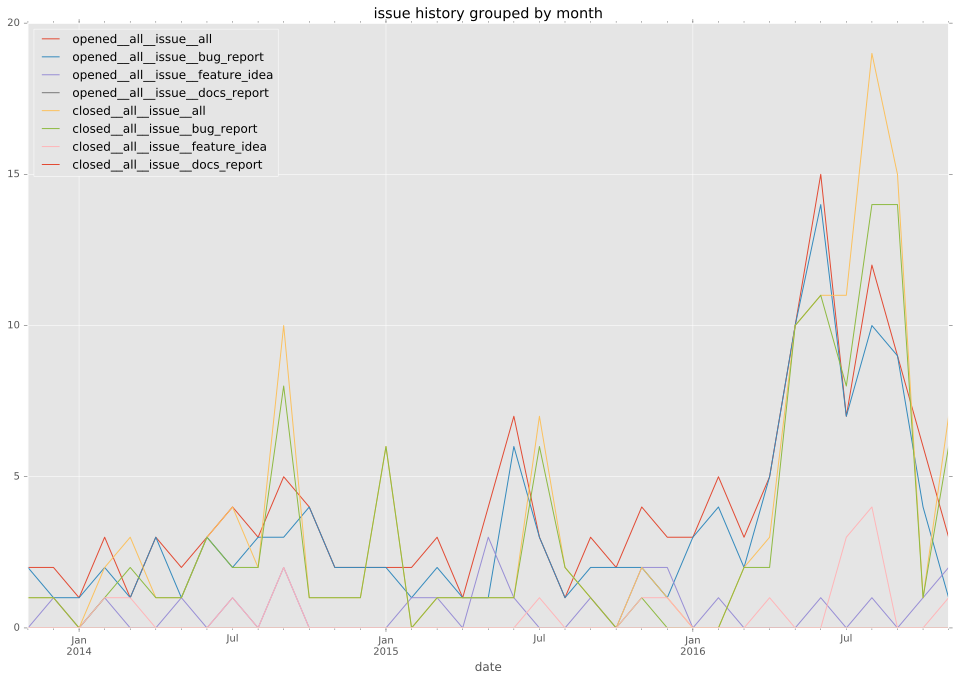
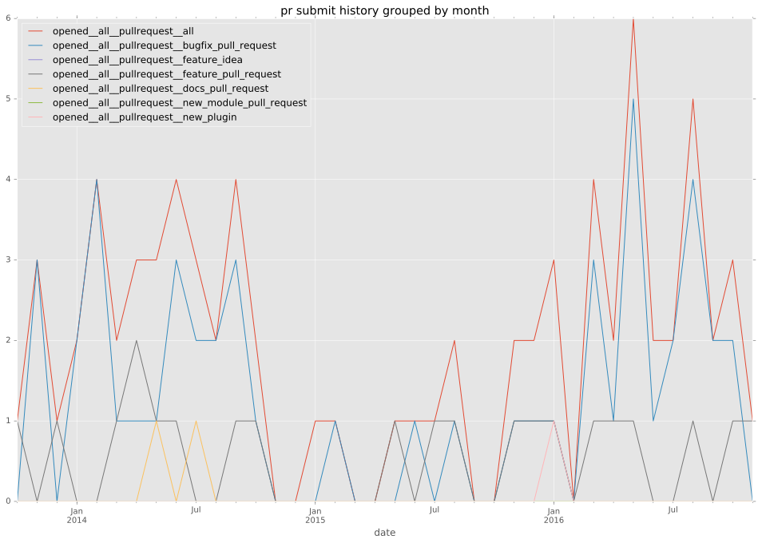
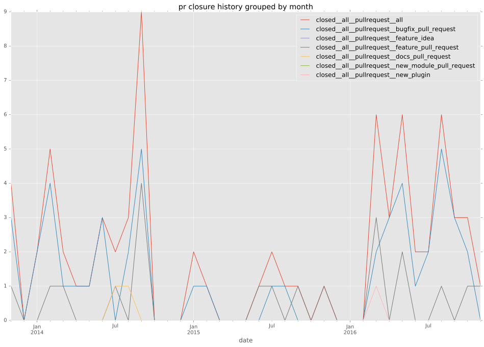
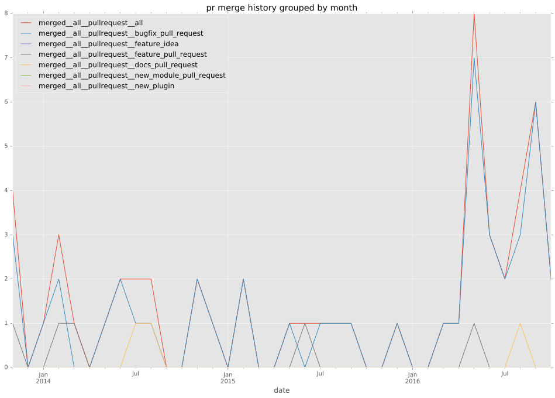
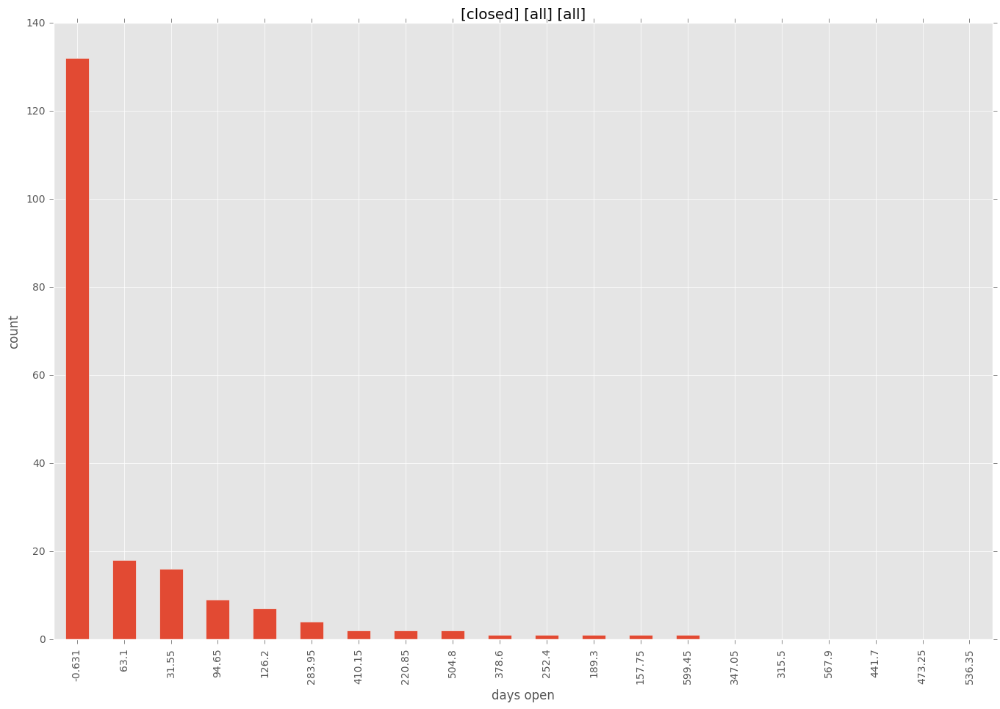

authors
- dagwieers
maintainers
- dagwieers
- pileofrogs
contributors
- dagwieers : 126 commits
- abadger : 48 commits
- risaacson : 17 commits
- jimi-c : 13 commits
- mattclay : 10 commits
- Jmainguy : 7 commits
- mscherer : 6 commits
- verm666 : 3 commits
- pib : 3 commits
- neowu : 2 commits
- mrsheepuk : 2 commits
- mpdehaan : 2 commits
- jlund : 2 commits
- jctanner : 2 commits
- willthames : 1 commits
- vmindru : 1 commits
- samdoran : 1 commits
- ryansb : 1 commits
- lucascbeyeler : 1 commits
- geetotes : 1 commits
- bcoca : 1 commits
total issue counts
unknown: 1
feature pull request: 15
docs report: 2
pullrequest: 91
docs pull request: 4
bugfix pull request: 71
feature idea: 16
issue: 123
new plugin: 2
bug report: 103
issue history

pullrequest history



days open by issue type
bugfix pull request
count: 116
std: 27.6180470298
min: 0
max: 117
median: 0.0
mean: 13.5
all
count: 251
std: 91.056561731
min: 0
max: 631
median: 5.0
mean: 43.5976095618
pullrequest
count: 0
std: nan
min: nan
max: nan
median: nan
mean: nan
docs pull request
count: 7
std: 44.6558266875
min: 0
max: 93
median: 9.0
mean: 39.8571428571
docs report
count: 2
std: 96.8736290226
min: 20
max: 157
median: 88.5
mean: 88.5
feature pull request
count: 20
std: 73.1659253449
min: 0
max: 295
median: 67.5
mean: 80.9
feature idea
count: 11
std: 222.147453078
min: 0
max: 518
median: 78.0
mean: 196.909090909
issue
count: 0
std: nan
min: nan
max: nan
median: nan
mean: nan
new plugin
count: 2
std: 7.77817459305
min: 42
max: 53
median: 47.5
mean: 47.5
bug report
count: 92
std: 102.690811522
min: 0
max: 631
median: 11.0
mean: 54.7826086957
closures grouped by total days open
